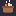

등불 심연
기름이 곧 탄약이자 불빛인 실시간 던전 슈팅 로그라이트
쏠수록 기름이 줄고, 기름이 줄면 등불이 비추는 범위와 자동 조준 거리가 함께 좁아집니다. 적을 쓰러뜨리고 방을 정리해 기름을 모으며 다섯 층을 내려가, 5층 출구의 심연지기를 쓰러뜨리고 불씨를 되찾으면 승리입니다. 키보드만으로 끝까지 할 수 있습니다.
특징
-
기름 = 탄약 + 불빛
무기마다 기름 소모가 다르고, 기름이 모자라면 등불로 후려칩니다(근접, 기름 없음). 불빛 밖의 적은 눈빛만 보입니다.
-
무기 7종
불씨 권총 · 광부 곡괭이(적 탄 쳐내기) · 연발 부싯돌 · 반딧불 주머니(유도 3발) · 산탄 등불 · 빛창(관통) · 기름 투척기(폭발). 두 개를 들고 바꿔 씁니다.
-
방 단위 전투
방에 들어가면 문이 잠기고 웨이브를 모두 쓰러뜨려야 열립니다. 보물방 상자에서 새 무기, 출구방 계단에서 다음 층.
-
층마다 특성 · 이어 하기
계단을 내려갈 때 특성 셋 중 하나를 고릅니다. 층을 시작할 때마다 저장돼, 처음 화면에서 그 층부터 이어 합니다.
조작
| 동작 | 키보드 | 터치 |
|---|---|---|
| 이동 | WASD · 방향키 | 왼쪽 스틱 |
| 공격 (누르고 있으면 연사, 자동 조준) | J · Space | 공격 버튼 |
| 구르기 (짧은 무적) | K · Shift | 구르기 버튼 |
| 무기 교체 | Q (1 · 2로 바로) | 교체 버튼 |
| 줍기 · 상자 열기 · 내려가기 | E · Enter | 줍기 버튼 |
| 일시정지 · 도움말 | Esc · P · ? | 오른쪽 위 일시정지 단추 |
궤도 점프
탭 한 번으로 행성에서 행성으로 뛰어오르는 한 손 게임
-
처음 화면 -
점선 방향으로 점프 -
끝. 최고 기록은 기기에
행성 궤도를 돌다가 탭하면 진행 방향(점선)으로 튀어 나가고, 다른 행성의 포획 범위에 들어가면 그 궤도에 붙습니다. 머무는 행성은 테두리 게이지가 다 닳으면 무너지니, 그 전에 다음 행성으로 옮겨야 합니다. 한 손으로, 몇 초 만에 다시 시작할 수 있습니다.
특징
-
탭 한 번
조작은 점프 하나뿐입니다. 언제 뛰느냐가 전부라, 버스 기다리는 동안 한 판씩 하기 좋습니다.
-
PERFECT
새 행성에 붙으면 1점, 정중앙을 노려 붙으면 PERFECT로 2점입니다.
-
점점 빠르게
점수가 오를수록 회전이 빨라지고 행성이 작아지며, 움직이는 행성이 늘어납니다.
-
끝나는 조건
좌우 벽에는 튕깁니다. 화면 아래로 빠지거나 2.2초 넘게 아무 데도 못 붙으면 끝. 최고 기록과 소리 설정은 기기에 남습니다.
조작
| 동작 | 키보드 · 마우스 | 터치 |
|---|---|---|
| 점프 · 시작 · 다시 | Space · 클릭 | 화면 아무 데나 탭 |
| 소리 켜고 끄기 | 오른쪽 위 단추 | 오른쪽 위 단추 |

냠냠 원정대 베타
브라우저에서 여럿이 함께 사냥하는 도트 MMORPG
포털로 이어진 마을과 필드를 다니며 몬스터를 사냥하고 레벨을 올립니다. 같은 필드에 있는 다른 사람이 사냥하는 모습이 보이고, 함께 잡으면 경험치를 더 받습니다. 짧게 접속해도 성장할 수 있게 만들고 있는 베타 플레이테스트로, 지금은 레벨 · 가방이 접속해 있는 동안만 남습니다(계정 · 저장은 다음 단계).
특징
-
함께 쓰는 필드
한솥 마을 · 말랑 초원 · 버섯 언덕이 포털로 끊김 없이 이어지고, 같은 채널의 사람이 모두 같은 필드에 있습니다.
-
각자 드롭
피해를 준 사람 모두에게 개인 드롭과 경험치가 돌아갑니다. 같이 잡으면 한 사람당 +10%씩.
-
서버 판정
이동 · 공격 · 구르기를 서버가 판정하고, 내 화면은 예측으로 바로 반응합니다. 몬스터는 통통 뛰는 슬라임, 돌진하는 토끼, 포자를 쏘는 버섯.
-
로그인 없이 바로
방을 만들고 초대 링크나 4글자 코드를 보내면 끝. 480×270 도트라 사양 낮은 PC · 크롬북에서도 가볍습니다.
조작
| 동작 | 키보드 | 터치 |
|---|---|---|
| 이동 | WASD · 방향키 | 화면 왼쪽을 누르고 끌기 |
| 공격 (누르고 있으면 연사, 가까운 몬스터 자동 조준) | J · Space | 공격 버튼 |
| 구르기 (구르는 동안 무적) | K · Shift | 구르기 버튼 |
| 소리 켜고 끄기 · 나가기 | M · Esc | 위쪽 단추 |
여럿이 하는 게임이라 인터넷 연결이 필요합니다. 중계 서버가 꺼져 있을 때는 방을 만든 사람의 브라우저가 서버가 되는데, 이때는 학교 · 회사 네트워크에서 연결이 막힐 수 있습니다. 혼자 테스트는 내 브라우저 안에서 봇 세 명과 돕니다.